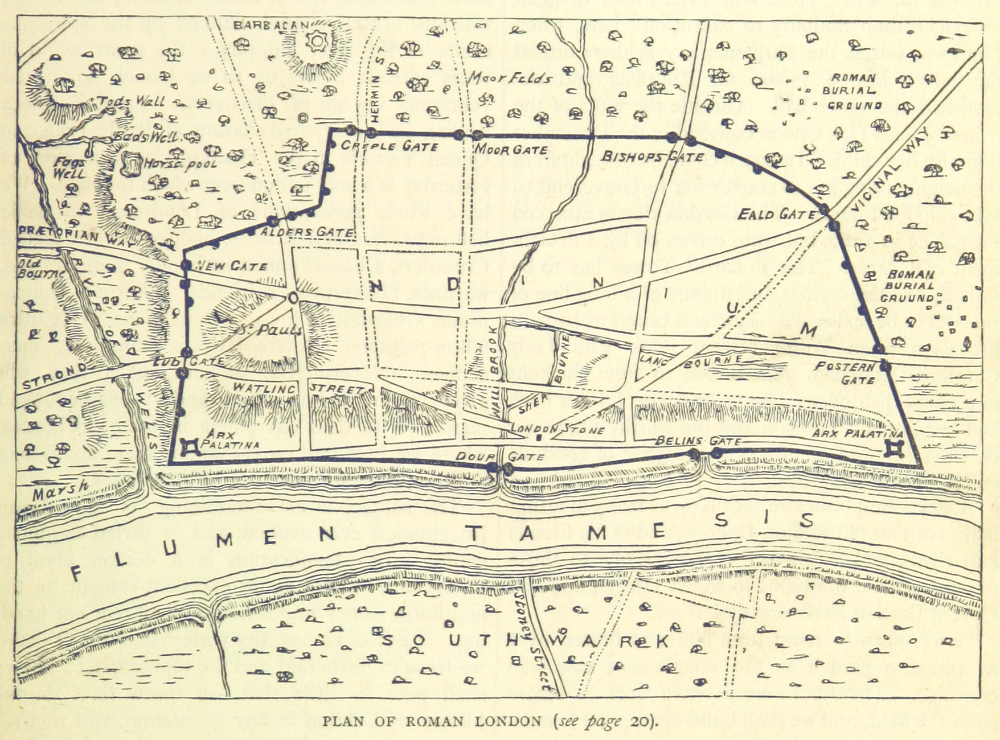
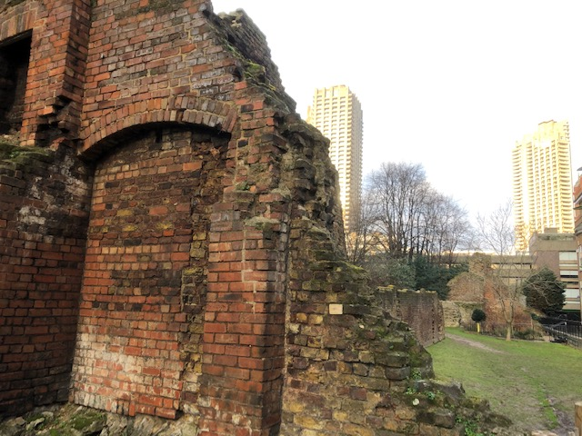
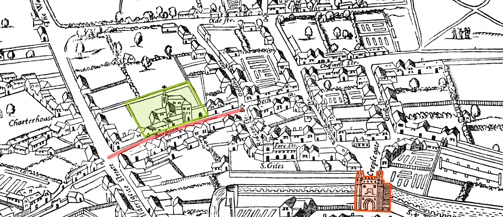
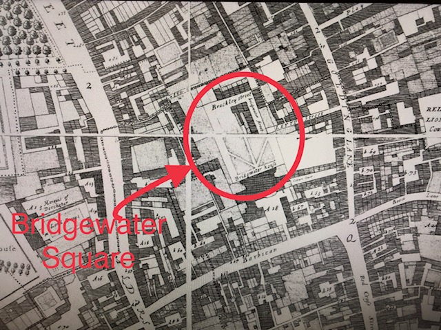

Historic Milestones
The evolution of Bridgewater Square from 1 AD to date
Map of Roman London around 50 AD from Old & New London by W Thornbury & E Walford, 1872
Roman London
Founding of Londinium (the capital of Roman Britain) at a strategic crossing point over the River Thames. This allowed the city to become a key road nexus and major port.
To defend the city, Cripplegate Fort in the north-west and the London Wall surrounding the city - both made of stone - were built.
Londinium rose to become a major trading center until the Roman army left in 410 and the city then fell into swift ruin.
Medieval revival in the Anglo-Saxon period
From around 500, a new Anglo-Saxon settlement Lundenwic developed slightly to the west of old Londonium.
Due to the frequent Viking attacks, Alfred the Great, moved Lundenwic into the safety of the London Wall in 860, the event recorded in the Anglo-Saxon Chronicle as the "refounding" of London ('Lundenburh'). Urban activity increased significantly and by 1100, London was the largest town in England.
The city's watch-towers were re-repaired or newly built by Gilbert de Clare, Earl of Gloucester, during the Second Barons' War. However, in 1267 when the War ended, the victorious Henry III had all 'their burkhennings, watch-towers, and bulwarks.., plucked down..so that nowt of them might be seen to remain.'
Whilst the extensively repaired London Wall provided security, it constrained London's growth and accessibility. This led to the development of extra-mural parts (i.e. outside the London Wall) in the north-west part with the creation of the area which would become known as the Barbican and included in the extended boundary of the Cripplegate Ward of the City of London.
Present day remnants of London Wall with Barbican Estate towers in the background
1561 AGAS Map showing the Barbican area
The origin of Barbican / La Bas Court / Willoughby House
The Barbican area in London got its name (which is of French origin) from a watch-tower with a walled enclosure likely to have been located there.
Whilst the watch-tower was destroyed, the walled enclosure called La Bas Court was given to Robert Ufford in 1331 by Edward III.
Upon his death, Robert de Ufford left La Bas Court to his son William (the 2nd Earl of Suffolk). William unfortunately died suddenly in 1382 without any issue. In William's will, La Bas Court is described as 'A tenement with a garden and 13 shops with solars built thereon'. William also mentions further his ‘10 shops with gardens annexed on the west side of a street called 'Goldynglane', together with 'a garden containing 2 a. land adjacent to the said gardens on the west side thereof'. William left all this and his lands in Suffolk to his sister Cecily.
Cecily had married John, 3rd Lord Willoughby de Eresby and as a result of William's will, the properties came into the Willoughby de Eresby family. The family made significant upgrades and changes to La Bas Court in the 1560s and referred to it as "Willoughby House".
Barbican - Bridg(e)water House
Willoughby House, located in the Barbican area of London, was sold by Robert Bertie (the 1st Earl of Lindsey and 14th Baron of Willoughby de Eresby) to Thomas Egerton in around 1611.
Thomas Egerton was the 1st Viscount Brackley and 1st Baron Ellesmere, and also served as Lord High Chancellor of England from 1596-1617. He renamed the house as Bridgwater House, and it was passed down through his family, with the 2nd and 3rd Earls of Bridgewater, both called John Egerton, living there. The 3rd Earl was married in the chapel at Bridgwater House in 1664.
The house was known for its large number of hearths and its Barbican gardens were famous for their fruit production.
Tragically, Bridgwater House was destroyed by fire in 1687 in which the 3rd Earl's two young sons and tutor were also killed. The the property was then sold to Sir Christopher Wren and his associates for redevelopment.
Ogilby & Morgan's large scale map of the City as Rebuilt by 1676 showing Bridgewater Square
Layout of Bridgewater Square and house rentals from Sir Christopher Wren's sale parchment of 1712
Bridgewater Square
Bridgewater Square is a central garden square in London that was built on the site of Bridgwater House. It was purchased by Sir Christopher Wren and George Jackson of Chipping Warden in 1688 for £4,400. Along with his associates, Wren demolished the burnt house and transformed the site into a garden square with housing along the four edges.
The development was in line with the Rebuilding Act of 1667 which had been passed after the Great Fire of London and influenced the design and construction of buildings in the city.
The Square was described as “a very handsome open Place, with very good Buildings, well inhabited” in a survey from 1720.
Throughout the 18th and 19th centuries, the houses on the Square were occupied by various tradespeople and businesses with their workshops on the ground floor and lodgings on the first floor.
The Square saw more significant changes in the mid-1850s with the construction of the Cripplegate Ward Boys School on the north side and Tranter's Temperance Hotel on the south side of the Square.
Further development of Bridgewater Square and the arrival of the Cobalt Building
In 1900, J&P Coats Ltd, acquired the eastern edge of the Square and constructed their offices there. J&P Coats Ltd were listed on the London Stock Exchange in 1890 and by 1912, they were the third largest company in the world by way of market capitalisation. Today, over a century on, they remain the world's largest manufacturer and distributor of sewing thread and second largest zip-maker.
The ‘Coats building’ subsequently became one of the first General Post Office (‘GPO’) training schools in the 1920s given the proximity of its location to the main GPO building on Aldersgate Street.
In 1925, there was a campaign to save the central Square as a public open space. The City of London Corporation acquired it under the Open Spaces Act 1906. The Square was laid out as public gardens and it was opened to the public on 15 October 1928.
In 1926, the Temperance Hotel was demolished and the modern Bridgewater House was built as offices. It was owned until post-WW2 by J&K Connor Ltd, hat manufacturers and then by Prudential Assurance.
Both Bridgewater House and the 'Coats building' survived the Blitz on 9 September 1940 whilst many neighbouring buildings were destroyed.
Post-WW2, whilst a part of the Square was incorporated into the famous Barbican Estate which was then being planned, the ‘Coats building‘ was not. This was due to the financial constraints faced by the City of London Corporation who could not afford to purchase it.
From the late 1980s through to the 1990s, there was further development of Bridgewater Square, primarily the conversion of the office buildings into private residences.
Bridgewater House was acquired by Brookcrest Properties Ltd and converted entirely into flats in 1995.
Similarly, the ‘Coats building’ was sold to Crown Dilmun. They demolished it and built the Cobalt Building in similar style to the ‘Coats building’. The first residents moved in around 1997.
Today, the Cobalt Building – a hidden jewel in this quiet neighbourhood of the City – is a sought after residential building for City workers and students.
Temperance Hotel - south side of Bridgewater Square